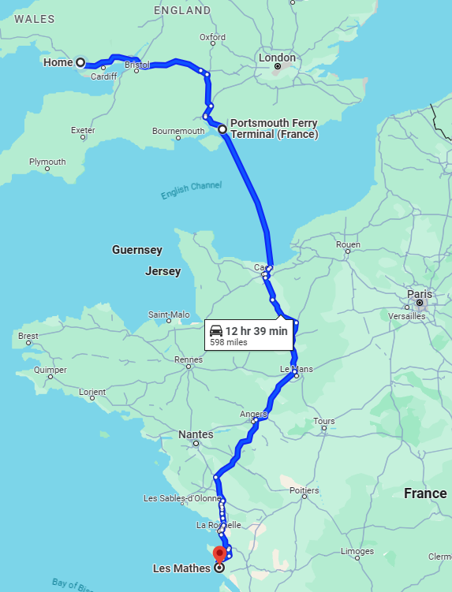

Triumph Sprint 1050GT
I think one of my first trips on this bike was another ride to Irvine in Scotland.
Will I ever learn?
This was also the bike that reintroduced me to touring in France—or at least my version of touring: riding to a campsite in the Vendée, staying there for a week or so and then travelling home again.
The main photograph was taken during a trip to Les Mathes. It was a lovely, peaceful campsite with few facilities to speak of—just the bare essentials in a little shop beside reception and a beautifully maintained toilet and shower block.

I struggled with the Triumph over long distances because my wrists couldn’t really cope with its mildly sporting riding position. After a couple of hours, they would be in agony.
But boy, could that bike cover the miles.
How I wished cruise control had been invented. As I discovered when I bought my next bike, it had been.
It was while I owned the Sprint that I changed jobs. After 27 years with my former employer, I made the bold decision to move on. We agreed that I would continue doing occasional jobs for Practice Net on my days off, working for a daily rate.
The arrangement worked very well for me. My new shift pattern consisted of two 12-hour day shifts, followed by two 12-hour night shifts and then four days off. That gave me plenty of downtime in which to take on extra work—which, in turn, meant plenty of trips around the UK and over to Guernsey.
Eventually, the time came to exchange the Sprint for something shiny and new. I took it to my local Yamaha dealership, where the salesman looked it over and we agreed on a part-exchange price against a new Yamaha MT-09.
Before finalising the sale, he asked to see it again with the panniers and top box fitted so that he could check its overall condition. He then took it for a test ride.
When he returned, he informed me that the engine was knackered.
I was gobsmacked. It seemed perfectly fine to me.
With that deal now dead, I rode over to Bevans Triumph. The salesman there gave the bike a cursory once-over—without taking it for a test ride—and made me a great offer. I happily part-exchanged it for a brand-new Triumph Tiger Sport.
Years later, curiosity got the better of me and I checked the Sprint’s tax and MOT history. It had never been taxed or MOT’d again.
It turned out that the Yamaha salesman had been right all along.